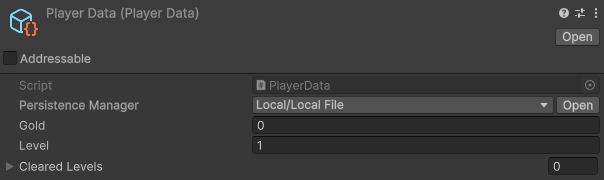
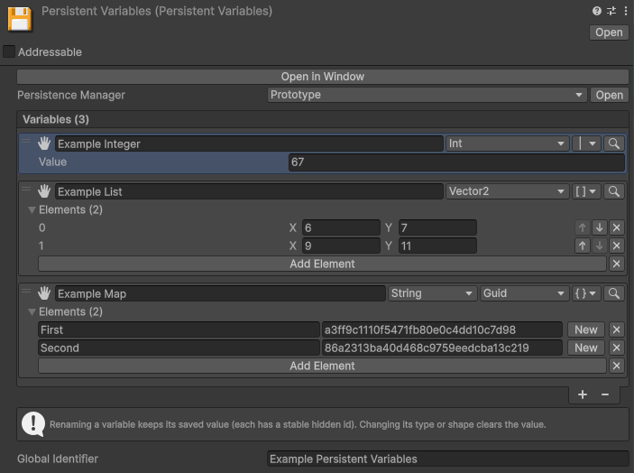
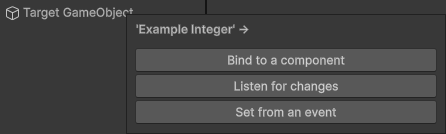
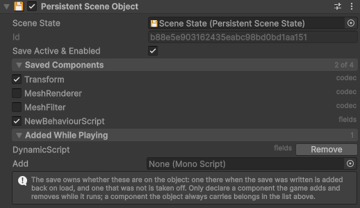
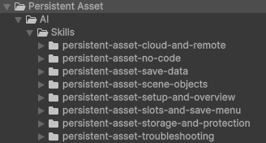
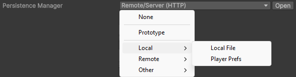

Quick Usage Guide
From nothing to your first save.
What it does
Persistent Asset makes your Unity assets persist across play sessions.
Change a value while the game runs. Close the game. The value is still there next time.
You write no saving code. The game saves itself when it loses focus, when it is paused, when it quits, and on a timer.
Slots, versioned saves, encryption, and more are there when you need them.
Many ways to save something
Stick to one of these, or mix them all in the same project. They all save the same way underneath.
An asset you write in code
A class you write, with its fields saved for you.
public class PlayerData : PersistentScriptableObject
{
public int gold;
public int level = 1;
public List<int> clearedLevels = new();
}Create the asset with Create > Persistent Asset > Persistent Object…:

Use it like any other ScriptableObject:
[SerializeField] PlayerData playerData;
void CollectCoin() => playerData.gold++; // an ordinary field, saved for you
An asset you author with no scripting
Rows in the inspector, dragged onto the objects that use them.
Create > Persistent Asset > Persistent Variables, then add a row per value.

Drag a row onto a GameObject and a menu asks what to add: a Variable Binder keeps the value in sync with something in the scene, a Variable Listener reacts when it changes, and a Variable Setter changes it.

Ready-made prefabs sit under GameObject > Persistent Asset.
A GameObject and its components
Choose what to keep on an object, and it comes back the way you left it.
- Add the Persistent Scene Object component to the object you want kept.
- Under Saved Components, tick the components you want saved.
The persistent asset holding it all is created for you.

The common built-in components are supported out of the box, your own scripts are saved by their fields, and objects spawned during play are covered too.
A ScriptableObject you already have
Keep the class it already inherits from.
[PersistentScriptableObject(nameof(persistenceManager))]
public class MyData : SomeOtherScriptableObject
{
[SerializeField] PersistenceManager persistenceManager;
}The attribute names the field you added. Nothing else changes.
Player prefs style
One value under a name, from any script. Nothing to set up.
Prefs.Set("gold", 120);
Prefs.Set("lastCheckpoint", transform.position);
int gold = Prefs.Get<int>("gold");
Vector3 spot = Prefs.Get("lastCheckpoint", spawn.position); // fallback when missingThe first call automatically creates a persistent asset in your project.

These values get every feature of the package.
Ask an AI assistant
Your agent learns the package from the instructions it ships with.
Point your AI agent at Assets/Persistent Asset/AI/Skills and it knows how to use the
package. Agents that read skill folders find it on their own.

From there, ask for what you want in your own words. It writes the code and wires the scene.
Watch your first save
- Enter Play mode.
- Change something you save with one of the ways above.
- Exit Play mode.
- Enter Play mode again. Your change is back.
To start again from an empty save, open Tools > Persistent Asset > Actions > Delete Local Data….
Where it gets stored
Every persistent asset has a Persistence Manager that decides where the save goes.
You pick one from a dropdown at the top of the asset.

New assets start on Prototype, which needs no setup.
Switching manager changes nothing in your game code.
| Manager | What it does |
|---|---|
| None | Saves nowhere, which turns saving off. |
| Prototype | Writes a file on the device, in a place picked for you, with nothing to configure. |
| Local | |
| Local File | Writes files you name and place yourself, with backup, compression and encryption. |
| Player Prefs | Writes to Unity's PlayerPrefs, which suits a small save that a silent loss would not hurt. |
| Remote | |
| Server (HTTP) | Sends the save to a backend service or your own server, to follow the player across devices. |
| Cloud Save (UGS) | Sends the save to Unity Gaming Services, to follow the player across devices with no server. |
| Steam Cloud | Sends the save to Steam, which carries it to the player's other machines. |
| Other | |
| Platform (Routing) | Hands the save to a different manager on each platform. |
| Session (Memory) | Keeps the save in memory, so it lasts one play session only. |
| Test | Fakes the result you ask for, to test how your game handles a failed save. |
The remote ones can keep a copy on the device, so the game still works with no connection.
Connect to a backend service has recipes for PlayFab, Firebase, Supabase, Nakama, LootLocker and more.
Take control when you want it
You can still ask for a save, a load or a clear from code:
PersistenceManager pm = playerData.PersistenceManager; // any persistent asset
SaveResult saved = pm.SaveSync(); // forced synchronous, on a manager that supports it
LoadResult loaded = pm.LoadSync();
ClearResult cleared = pm.ClearSync();PersistenceManager pm = playerData.PersistenceManager; // any persistent asset
pm.Save(result => Debug.Log(result.IsSuccess));
pm.Load(result => Debug.Log(result.IsSuccess));
pm.Clear(result => Debug.Log(result.IsSuccess));PersistenceManager pm = playerData.PersistenceManager; // any persistent asset
pm.Save(); // fits straight onto a UI event
pm.Load();
pm.Clear();PersistenceManager pm = playerData.PersistenceManager; // any persistent asset
PersistenceOperation<SaveResult> saveOperation = pm.SaveRoutine();
yield return saveOperation;
Debug.Log(saveOperation.Result.IsSuccess);
yield return pm.LoadRoutine();
yield return pm.ClearRoutine();PersistenceManager pm = playerData.PersistenceManager; // any persistent asset
SaveResult saved = await pm.SaveAsync();
LoadResult loaded = await pm.LoadAsync();
ClearResult cleared = await pm.ClearAsync();Learn more
The User Manual covers every feature in detail.
The Public API lists every type and member.
The demo's scripts, in Assets/Persistent Asset/Demo/Scripts, show the package at work in a
small game.
Support
Email me at justetools@gmail.com with any question. I answer within one business day.
If Persistent Asset saves you time, a review on the Asset Store helps me a lot!